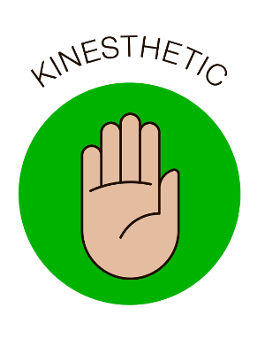

Tactile/Kinesthetic learners learn best when they can use their sense of
touch and can move about. If you are a tactile/kinesthetic learner, the
suggestions that follow can help you to succeed in school to the best of
your ability.

Be physically active while you study.
Rather than sitting
occasionally walk back and forth with your textbook or notes
as you read the information out loud.
To decrease your fidgeting as you
study, listen to music, preferably baroque music.
However, discontinue
this if you find the music to be distracting.
Make extensive use of a
computer and the Internet.
Actively touching the keyboard will keep your
mind active.
Take extensive written notes in class. Edit and type them
later.
Study in short blocks of time with frequent but short breaks.
Do
something physical as you study such as tapping a pencil or squeezing a
stress ball.
Use your finger as a guide while reading.
Act out things you
have to learn whenever possible.
Construct models of things you have to
learn whenever possible.
When trying to remember
information, close your eyes and "write" the information in the air.
If you find it difficult to sit at a desk when
studying, trying lying on your stomach or back.
Picture the information in your mind as you do so.
Use concrete objects to
help you understand math concepts.
When trying to learn the spelling of a
difficult word, arrange letter blocks to spell the word.
Try these
suggestions and learn which ones work best for you.